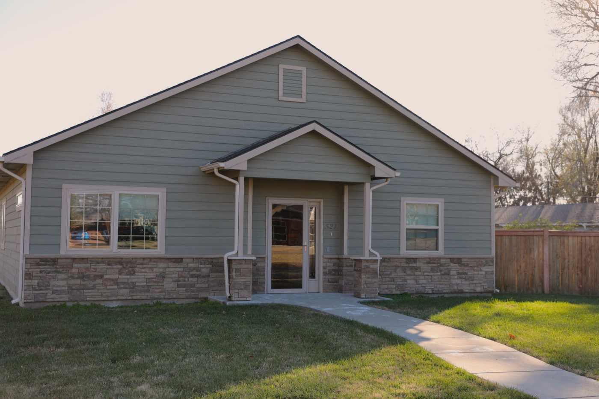
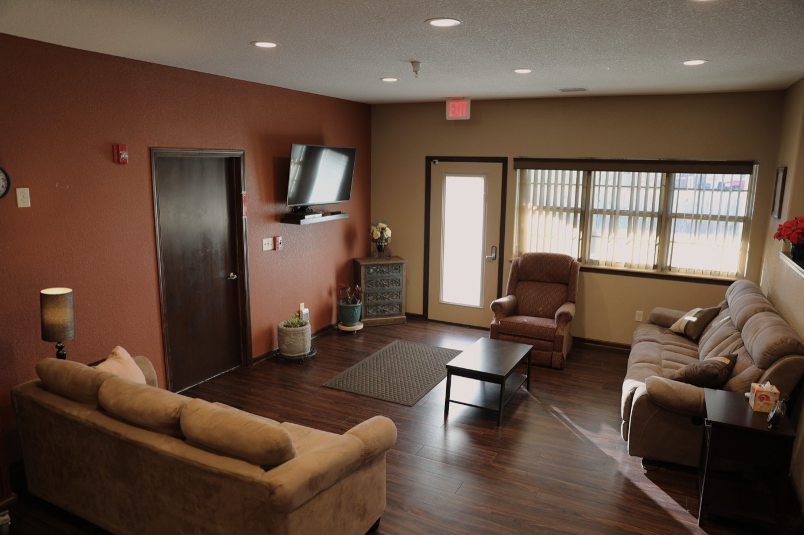
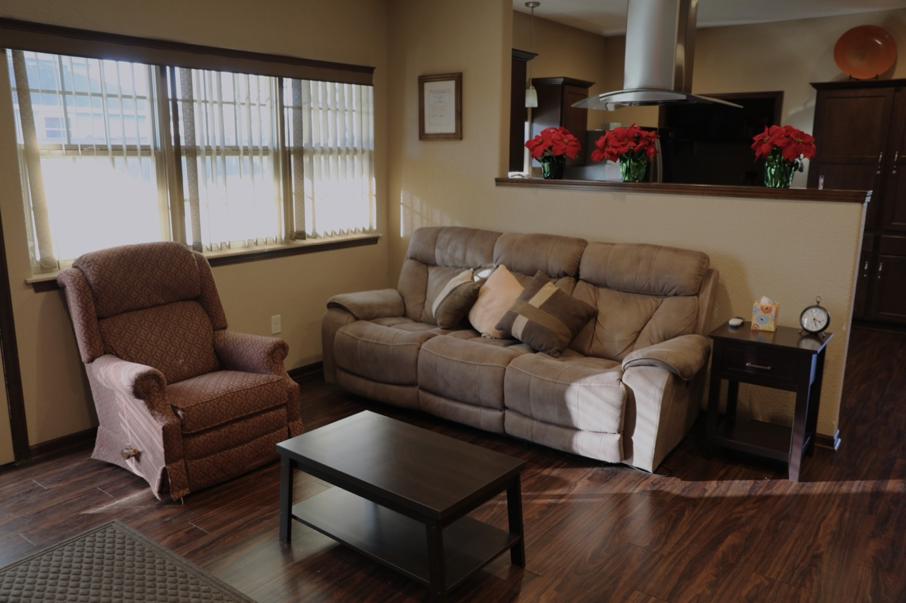
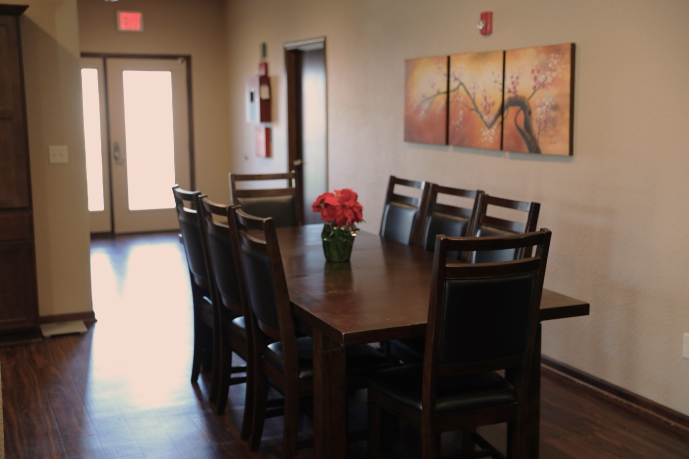
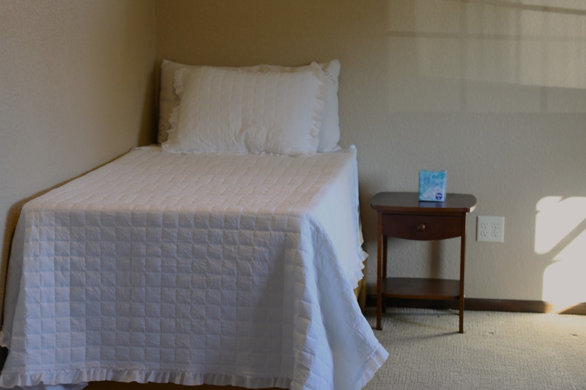
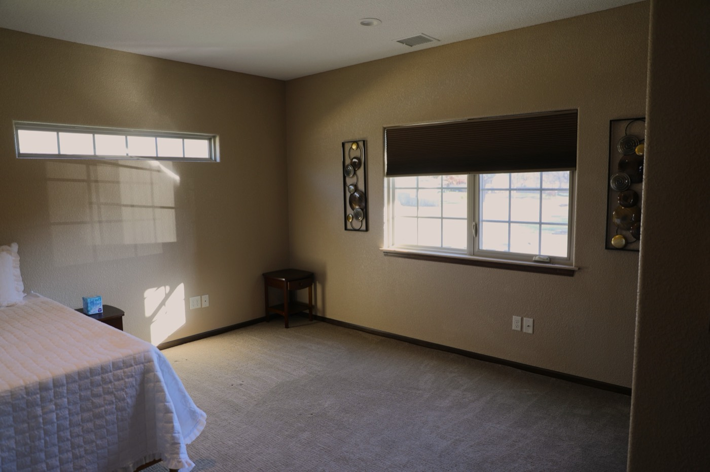
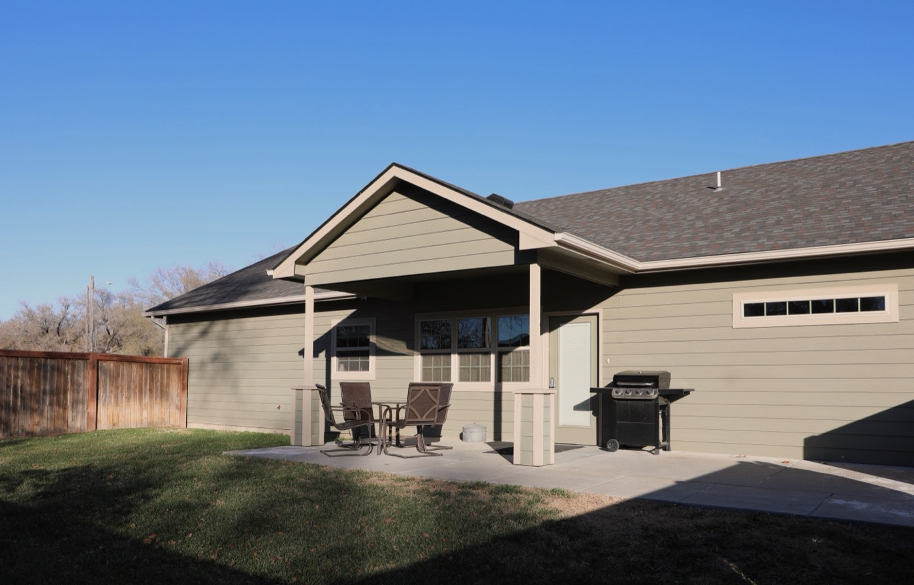

A Place Where
Home Truly Feels
Like Home
Residential senior care and supervised nursing support in the Wichita, Kansas area. Small, familiar, and genuinely caring.









Licensed & Regulated by the Kansas Department for Aging and Disability Services (KDADS) · Home Plus Certified · A small, intimate residential home-like setting
What We Offer
Our home is small by design. In a small, intimate setting, staff know your family member by name, not by room number.
Personal Care
Help with bathing, dressing, grooming, and getting around. We work around each person's routine, not the other way around.
Supervised Nursing
Medication management, health monitoring, and coordination with doctors and other providers.
Home-Like Setting
A real house in a real neighborhood. Not a wing, not a ward. Residents have space to feel settled and comfortable.
Small Community
A small, intimate setting. That's intentional. It means better care and people who actually know each other.
It's Not a Facility. It's a Home.
Mi Casa Care Homes started with a straightforward idea: people who need care deserve to get it somewhere that actually feels like home.
We're a licensed Home Plus facility in Wichita, Kansas, which means we operate out of a regular house in a real neighborhood. Residents share meals, have their own space, and are looked after by staff who actually know them.
We serve adults who need personal care and nursing support but don't need a hospital or large nursing facility. If you're not sure whether Mi Casa is the right fit, just ask us.
What is a Home Plus Facility?
Not sure what "Home Plus" means? Most people aren't. It's a care category defined by the state of Kansas that works differently than a nursing home or most assisted living options.
A Home Plus facility is a residential care setting that serves individuals in a small, intimate setting who, due to functional impairment, need personal care and may need supervised nursing care to assist with activities of daily living. These homes are typically single-family residences in residential neighborhoods.
Kansas Department for Aging and Disability Services (KDADS)Schedule a Tour
Come see the house, meet the staff, and ask whatever's on your mind. We're happy to show you around.
Schedule a Visit